Explore our various equipments available for different applications.
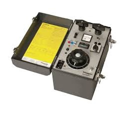
The CSU600A is a compact and rugged current supply unit designed for accurate and easy field testing. It offers a broad application range and an excellent weight-to-performance ratio, making it suitable for turn-ratio and performance testing of current transformers, primary testing of protective relays, current testing of low and high voltage circuit breakers, and commissioning tests requiring variable currents. The CSU600AT version provides a more complete solution with a built-in timer and analogue ammeter, allowing quick current settings and reducing connection time for faster testing.
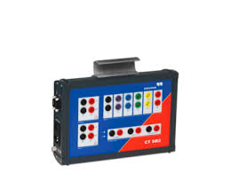
The CT SB2 switch box is an accessory for the CT Analyzer which allows automatic testing of multi-ratio current transformers. It is connected to all taps of the current transformer and to the CT Analyzer. This allows the transformer ratios of all winding combinations to be automatically tested with the CT Analyzer. The CT SB2 can either be positioned next to the CT Analyzer or directly attached to it. With a combined weight of 11 kg, this testing system is easily portable and ideally suited to mobile, on-site use.
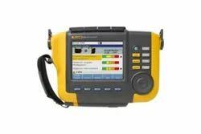
The Fluke 810 Vibration Tester is a handheld diagnostic tool designed for mechanical maintenance teams to quickly identify and prioritize mechanical problems without needing prior measurement history. It utilizes a unique diagnostic engine to detect the most common mechanical faults, such as bearing failures, misalignment, unbalance, and looseness.
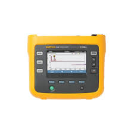
The Fluke 1736 Three-Phase Power Logger is a powerful tool for capturing and analyzing voltage, current, power, and power quality data with precision. Built for energy audits, load studies, and power quality assessments, it helps professionals optimize system performance and ensure compliance.
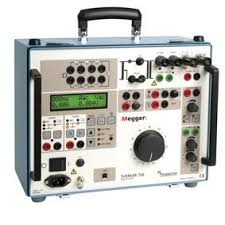
The Programma SVERKER 760 is a portable, single-phase secondary current injection test set designed for testing protective relay equipment in high-voltage substations and industrial environments. It is specifically known for its ability to perform advanced testing, including phase-shifting, which allows for the testing of directional protective equipment and automatic reclosing devices.
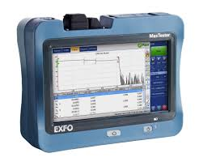
The OTDR is designed for everyday field testing in access networks, providing automated troubleshooting for FTTA, LAN, and data center environments. With the iOLM application, it supports both singlemode and multimode testing with one-touch acquisitions and clear go/no-go results. It offers a dynamic range of up to 36 dB, an event dead zone as low as 0.8 meters, combined wavelengths, EF-ready multimode testing, and live fiber testing at 1625 nm for efficient network diagnostics.
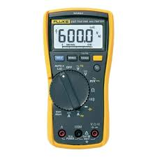
The Fluke 117 Digital Multimeter is purpose-built for electricians and maintenance professionals, offering true-RMS accuracy, built-in non-contact voltage detection, and intelligent features that make troubleshooting faster, safer, and easier. Equipped with VoltAlert™ technology, the Fluke 117 allows quick non-contact voltage checks, while AutoVolt automatic AC/DC selection simplifies testing. The LoZ low input impedance function eliminates false readings caused by ghost voltages, ensuring accurate results in real-world conditions.
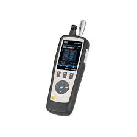
The Galvr 8-Channel Particle Counter is a high-precision airborne particle monitoring instrument designed for cleanrooms, laboratories, HVAC systems, and environmental testing applications. Built to meet ISO 21501-4 and JIS standards, this compact device offers reliable and accurate particle detection across multiple size channels — ensuring compliance and performance in critical environments.
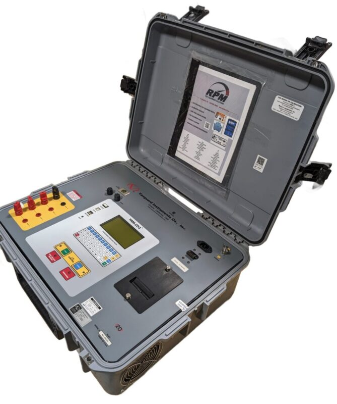
The Vanguard Instruments TRM-203 is a 3-phase, 20A transformer winding resistance meter designed for rapid, accurate measurements (1 𝜇 Ω to 2000 Ω Ω ) without swapping cables. It features automatic demagnetization, 4 input channels, a built-in printer, and computer interfaces (USB/RS-232/Bluetooth), suitable for testing transformers, motors, and generators.
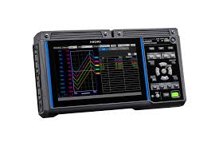
The Hioki LR8450 Data Logger is a powerful and versatile instrument designed for voltage, current, strain, and temperature measurements. Built for both R&D and field applications, it combines high-speed sampling with modular input options, making it adaptable to a wide range of testing environments.With its modular input support, the LR8450 can be configured to measure multiple parameters simultaneously, ensuring efficiency and accuracy in complex testing scenarios. Its large storage capacity and high sampling rates make it ideal for capturing fast, dynamic events, while the compact, portable design ensures convenience in the lab or on-site.
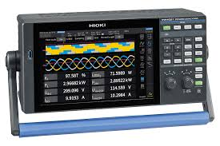
The Hioki PW4001 is a 4-channel power analyzer offering exceptional DC accuracy (±0.04%) and a wide 600 kHz bandwidth, delivering reliable performance from R&D labs to on-site testing. Its rugged, compact design makes it ideal for xEV efficiency evaluation, inverter testing, and energy analysis — anywhere precision matters.
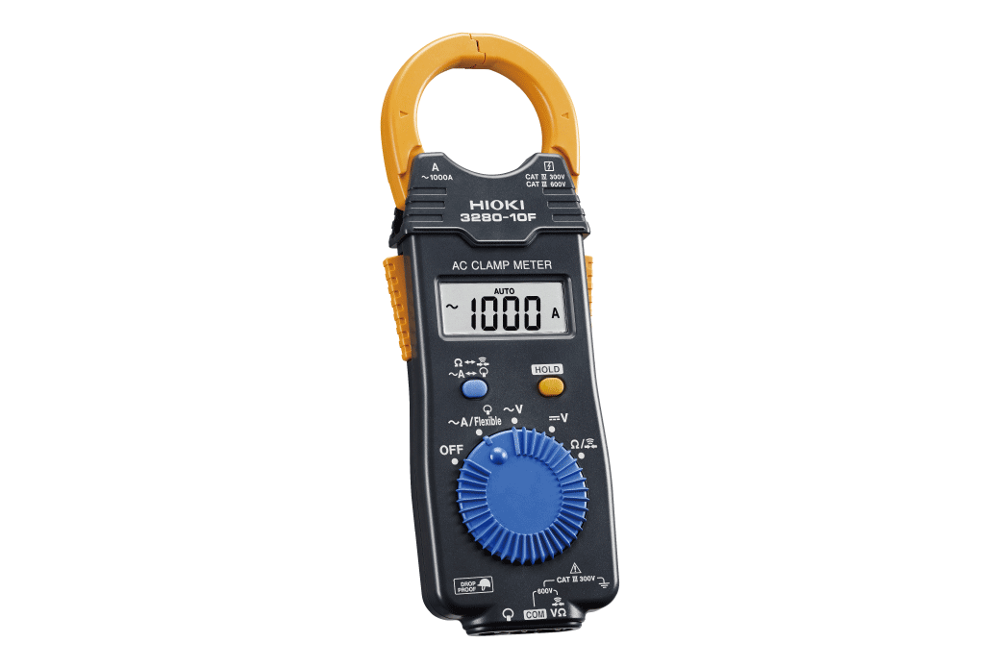
The Hioki 3280-10F AC Clamp Meter is a compact and lightweight tool engineered for HVAC technicians, electricians, and maintenance professionals who need accurate current measurement in demanding environments. With true-RMS accuracy, it ensures reliable readings even on complex, non-linear loads.Capable of measuring AC current up to 1000 A, the 3280-10F also includes resistance and continuity functions for versatile testing in one device. Its slim, ergonomic design allows for easy one-handed operation, while the rugged body is drop-resistant up to 1 meter, ensuring durability on the job site.
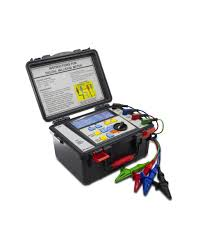
The Triplett ML200 is a professional battery-powered milliohm meter designed for precise measurement of low resistance and conductivity in electrical components and connections. Using a 4-wire testing method, it ensures exceptional accuracy and repeatability, making it ideal for use on components, contacts, connectors, switches, relays, PCBs, and wiring systems.
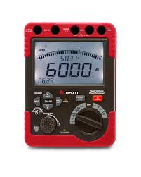
The Triplett MG600 is a professional high-voltage insulation tester designed to ensure the reliability and safety of electrical systems. With insulation resistance measurement up to 60 GΩ and selectable test voltages up to 5000 V, it’s ideal for preventive maintenance, troubleshooting, and compliance testing in industrial environments.Engineered for reliability and field convenience, the ML200 delivers a maximum resolution of 100 μΩ, providing dependable readings for diagnostics, maintenance, and quality assurance tasks.
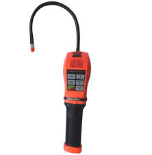
The DILO 3-033-R002 SF6 LeakPointer is a portable, cordless, and handheld gas detector designed for fast, precise localization of SF6 leaks in electrical switchgear and other equipment. It operates on the high-voltage ionization principle (corona discharge) to identify leaks up to a sensitivity of 5 g/year.
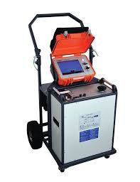
The SFX32 (Surgeflex 32) is a mobile cable test and fault location system designed to locate and pinpoint faults in low and medium voltage cables up to 32 kV. It features the latest Teleflex SX-1 technology for safe and fast fault detection, delivering high surge energy for accurate pinpointing and up to 0.1% accuracy. The system includes multiple fault location methods, a detachable battery-operated TDR, and advanced ARM multi-shot technology for pre-locating high-resistance faults. With high and low voltage pre-location in a single modular unit and multi-stage surge capacitors, it also supports short-term burning for fault conditioning when required.
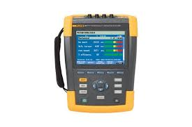
The Fluke 435 Series II and 438-II are advanced, portable, 3-phase power quality analyzers designed for troubleshooting and energy assessment in industrial environments. The 435-II specializes in high-end power quality and energy loss monetization, while the 438-II adds advanced mechanical motor analysis, including speed, torque, and power without mechanical sensors.
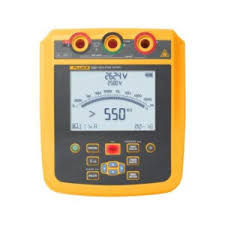
The Fluke 1550C 5 kV Insulation Resistance Tester is a digital, high-voltage testing tool designed to assess the insulation integrity of equipment such as switchgear, motors, generators, and cables. It enables predictive maintenance by measuring insulation resistance up to 2 TΩ and is capable of testing up to 5,000 V (5 kV).
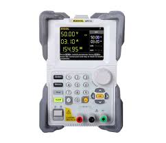
The Rigol DP712 is a very high quality programmable laboratory power supply with one DC output (50 V/3 A) and a maximum power output of 150 W. Like all Rigol devices, the power supply features a very well constructed and easy to use interface, which also offers comprehensive ease-of-use functions, such as programmable voltage curves. The menu has an intuitive structure. The Rigol DP712 features a relative large (8.9 cm / 3.5″) and easy to read TFT display. A timer control can be used to set the output signal to different values in up to 2048 groups.
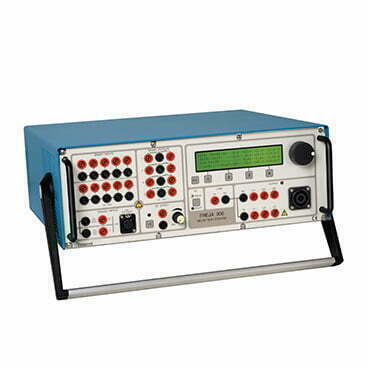
The FREJA 546 is a lightweight, portable relay test system designed for secondary testing of protection relays. It can be operated manually using the built-in touchscreen with FREJA Local software or through a PC using FREJA Win. The unit features high-power voltage and current channels capable of testing almost all types of protective relays, with the ability to convert voltage channels into current channels for up to six current outputs. Its high-resolution TFT LCD touchscreen enables quick manual, steady-state, and dynamic testing with preset automatic test routines. Test results can be stored, transferred via USB or Ethernet, and multiple FREJA units can be daisy-chained and synchronized for complex protection system testing.
Contact us today to discuss your rental requirements and get a customized quote.
Contact Us